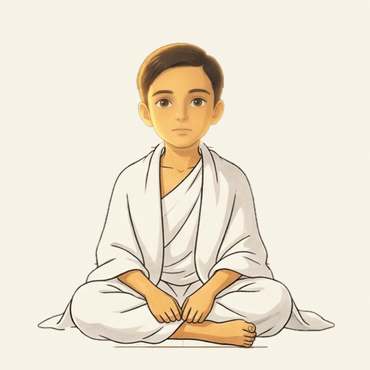
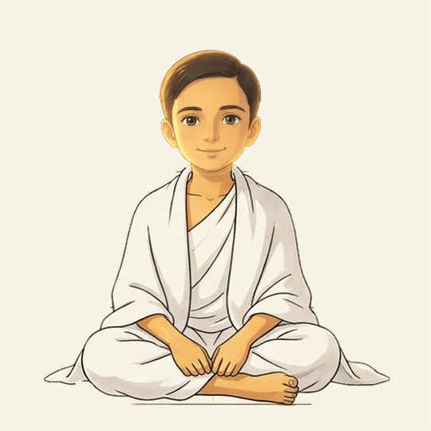
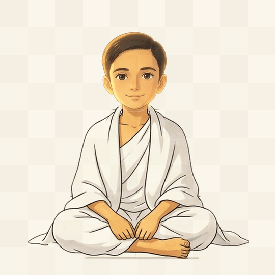
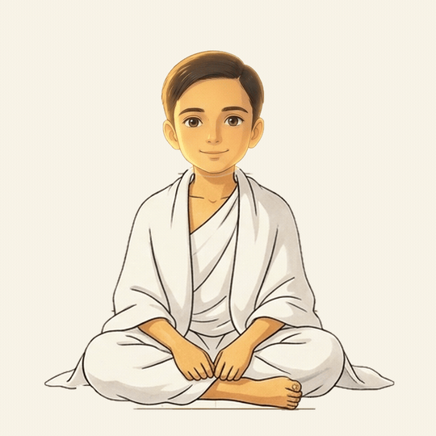
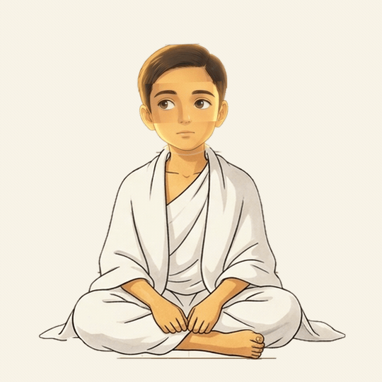
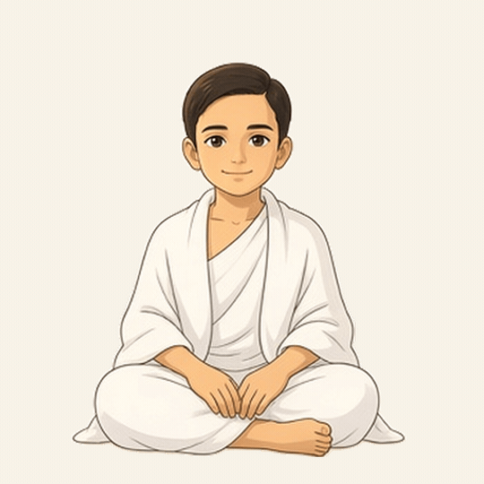
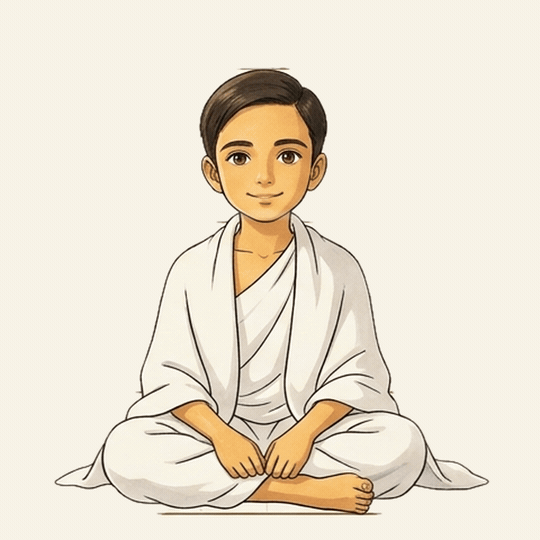
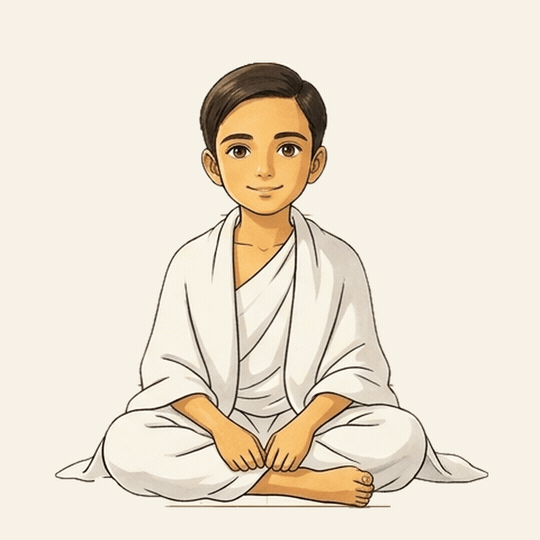
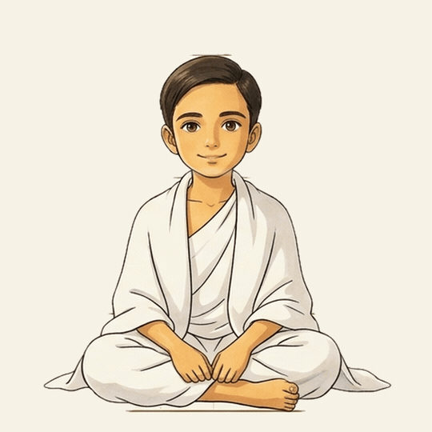
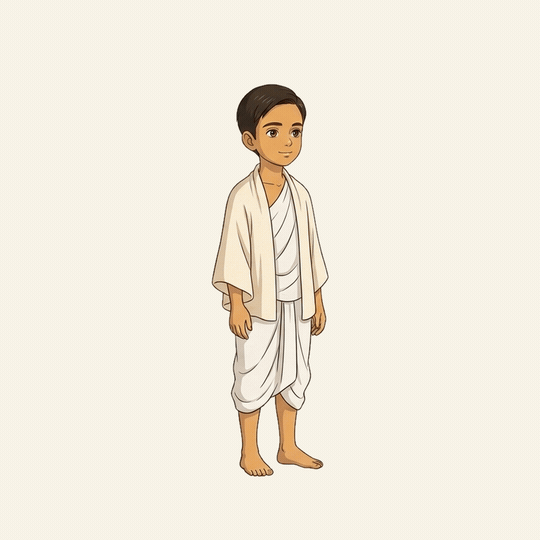

Looking Sad / Compassionate SorrowInnocent Child Surprise

Natural Idle Blinking & BreathingGentle Smiling with Natural Blinking
Head (8)
Looking DownwardLooking LeftLooking Right

Looking Upward

Nodding Yes (With Anticipation & Cloth Follow-Through)Shaking Head No Gently

Tilting Head Affectionately

Turning Head Towards the Camera
Hands (10)
Explaining Gently with Open PalmsExpressing Innocent Surprise with Hands

Folding Hands Gently Across Lap

Warm Bengali Namaskar Greeting

Traditional Namaskar GestureCompassionate Child Pleading GesturePointing Gently Towards NatureRaising Right Hand in Serene BlessingResting Hands Calmly on Lap

Friendly Child Waving Gesture
Sitting (10)

Kneeling Down ReverentlySitting Cross-Legged and Laughing Joyfully